Memahami data#
Deskripsi Data#
Data yang digunakan di pembelajaran ini adalah dataset iris yang didapat di kaggle. Dataset Iris adalah salah satu dataset paling terkenal dalam ilmu data dan pembelajaran mesin. Dataset ini pertama kali diperkenalkan oleh ahli biologi Sir Ronald Fisher pada tahun 1936 sebagai contoh dalam analisis diskriminan linear. Ini terdiri dari data pengukuran dari tiga spesies iris (Iris setosa, Iris versicolor, dan Iris virginica). Setiap spesies diambil dari pulau Gugusan Kepulauan Guernsey dan Pantai Pasifik Amerika Serikat. Dataset ini sering digunakan untuk demonstrasi dalam klasifikasi dan clustering karena sifatnya yang relatif sederhana dan dapat dengan mudah dimengerti.
Jumlah Data: Dataset iris terdiri dari 150 data.
Fitur/Fitur: Setiap data dalam dataset iris memiliki empat fitur numerik, yaitu:
- Panjang Kelopak (Sepal Length):
<> Ini adalah panjang dari bagian terluar dari kelopak bunga iris, yang biasa disebut "sepal".
<> Diukur dalam satuan sentimeter (cm).
<> Fitur ini menggambarkan seberapa panjang bagian terluar dari bunga iris.
- Lebar Kelopak (Sepal Width):
<> Ini adalah lebar dari bagian terluar dari kelopak bunga iris.
<> Diukur dalam satuan sentimeter (cm).
<> Fitur ini menggambarkan seberapa lebar bagian terluar dari bunga iris.
- Panjang Mahkota (Petal Length):
<> Ini adalah panjang dari bagian dalam bunga iris, yang biasa disebut "mahkota" atau "petal".
<> Diukur dalam satuan sentimeter (cm).
<> Fitur ini menggambarkan seberapa panjang bagian dalam dari bunga iris.
- Lebar Mahkota (Petal Width):
<> Ini adalah lebar dari bagian dalam bunga iris.
<> Diukur dalam satuan sentimeter (cm).
<> Fitur ini menggambarkan seberapa lebar bagian dalam dari bunga iris.
Variabel Target: Setiap data juga dilengkapi dengan satu variabel target yang menyatakan spesies dari bunga iris tersebut. Terdapat tiga spesies iris yang berbeda dalam dataset ini:
- Iris-setosa
- Iris-versicolor
- Iris-virginica
Tujuan: Tujuan umum dari dataset iris adalah untuk mengklasifikasikan spesies bunga iris berdasarkan fitur-fitur morfologisnya.
Struktur Data#
!pip install mysql-connector-python
Collecting mysql-connector-python
Downloading mysql_connector_python-8.4.0-cp310-cp310-manylinux_2_17_x86_64.whl.metadata (2.0 kB)
Downloading mysql_connector_python-8.4.0-cp310-cp310-manylinux_2_17_x86_64.whl (19.4 MB)
?25l
━━━━━━━━━━━━━━━━━━━━━━━━━━━━━━━━━━━━━━━━ 0.0/19.4 MB ? eta -:--:--
━━━━━━━━╸━━━━━━━━━━━━━━━━━━━━━━━━━━━━━━━ 4.2/19.4 MB 123.3 MB/s eta 0:00:01
━━━━━━━━━━━━━━━━━━━╺━━━━━━━━━━━━━━━━━━━━ 9.4/19.4 MB 136.2 MB/s eta 0:00:01
━━━━━━━━━━━━━━━━━━━━━━━━━━━━━━╸━━━━━━━━━ 14.9/19.4 MB 153.1 MB/s eta 0:00:01
━━━━━━━━━━━━━━━━━━━━━━━━━━━━━━━━━━━━━━━╸ 19.4/19.4 MB 157.7 MB/s eta 0:00:01
━━━━━━━━━━━━━━━━━━━━━━━━━━━━━━━━━━━━━━━╸ 19.4/19.4 MB 157.7 MB/s eta 0:00:01
━━━━━━━━━━━━━━━━━━━━━━━━━━━━━━━━━━━━━━━╸ 19.4/19.4 MB 157.7 MB/s eta 0:00:01
━━━━━━━━━━━━━━━━━━━━━━━━━━━━━━━━━━━━━━━╸ 19.4/19.4 MB 157.7 MB/s eta 0:00:01
━━━━━━━━━━━━━━━━━━━━━━━━━━━━━━━━━━━━━━━━ 19.4/19.4 MB 52.3 MB/s eta 0:00:00
?25h
Installing collected packages: mysql-connector-python
Successfully installed mysql-connector-python-8.4.0
[notice] A new release of pip is available: 24.0 -> 24.1.1
[notice] To update, run: python3 -m pip install --upgrade pip
from sqlalchemy import create_engine
import pandas as pd
# Informasi koneksi ke database MySQL di cloud Aiven
hostname = 'mysql-b1da7b1-surya22149.a.aivencloud.com'
port = 15391
username = 'avnadmin'
password = 'AVNS_zBTOptR3g0qGi1CjCvE'
database = 'dataset_iris'
# Membuat string koneksi SQLAlchemy
connection_string = f'mysql+mysqlconnector://{username}:{password}@{hostname}:{port}/{database}'
# Membuat engine SQLAlchemy
engine = create_engine(connection_string)
# Membaca data dari database menggunakan Pandas
query = "SELECT * FROM `iris`"
dataset = pd.read_sql(query, engine)
# Menutup koneksi ke database
engine.dispose()
dataset.dtypes #untuk mengetahui tipe data tiap kolom
id int64
SepalLengthCm float64
SepalWidthCm float64
Species object
dtype: object
dataset.shape #untuk mengetahui jumlah baris dan kolom
(150, 4)
Tampilan Data#
Tampilan seluruh data
df_1 = _deepnote_execute_sql('SELECT * FROM `dataset_iris`.`iris`', 'SQL_0A99A490_95B5_4FD7_86DC_469537FD258A', audit_sql_comment='', sql_cache_mode='cache_disabled')
df_1
---------------------------------------------------------------------------
NameError Traceback (most recent call last)
Cell In[5], line 1
----> 1 df_1 = _deepnote_execute_sql('SELECT * FROM `dataset_iris`.`iris`', 'SQL_0A99A490_95B5_4FD7_86DC_469537FD258A', audit_sql_comment='', sql_cache_mode='cache_disabled')
2 df_1
NameError: name '_deepnote_execute_sql' is not defined
Deskripsi Statistik Sederhana#
dataset.describe()
| id | SepalLengthCm | SepalWidthCm | PetalLengthCm | PetalWidthCm | |
|---|---|---|---|---|---|
| count | 150.000000 | 150.000000 | 150.000000 | 150.000000 | 150.000000 |
| mean | 75.500000 | 5.843333 | 3.054000 | 3.758667 | 1.198667 |
| std | 43.445368 | 0.828066 | 0.433594 | 1.764420 | 0.763161 |
| min | 1.000000 | 4.300000 | 2.000000 | 1.000000 | 0.100000 |
| 25% | 38.250000 | 5.100000 | 2.800000 | 1.600000 | 0.300000 |
| 50% | 75.500000 | 5.800000 | 3.000000 | 4.350000 | 1.300000 |
| 75% | 112.750000 | 6.400000 | 3.300000 | 5.100000 | 1.800000 |
| max | 150.000000 | 7.900000 | 4.400000 | 6.900000 | 2.500000 |
Berikut adalah beberapa informasi yang dihasilkan oleh describe():
Count (Jumlah): Jumlah entri non-null dalam setiap kolom.
Mean (Rata-rata): Rata-rata dari setiap kolom.
Std (Standar Deviasi): Standar deviasi dari setiap kolom, mengukur seberapa tersebar data di sekitar rata-rata.
Min (Minimum): Nilai minimum dalam setiap kolom.
25% (Kuartil Pertama): Nilai kuartil pertama (25th percentile) dari setiap kolom, menandakan nilai di bawahnya 25% dari data.
50% (Median): Nilai median (50th percentile) dari setiap kolom, membagi data menjadi dua bagian yang sama.
75% (Kuartil Ketiga): Nilai kuartil ketiga (75th percentile) dari setiap kolom, menandakan nilai di bawahnya 75% dari data.
Max (Maksimum): Nilai maksimum dalam setiap kolom Jumlah data setiap class/specie
Jumlah Data Setiap Species#
dataset.groupby('Species').size() # mengetahui jumlah masing-masing species
Species
Iris-setosa 50
Iris-versicolor 50
Iris-virginica 50
dtype: int64
Mengumpulkan Data#
Untuk langkah pertama yaitu mencari dataset iris di kaggle (https://www.kaggle.com/), lalu membuat dua database yaitu database mysql dan postgresql di aiven. setelah itu masukkan dataset iris tadi yang sudah didapat ke dalam masing masing database di aiven menggunakan mysql untuk mysql dan pgadmin untuk postgresql.
Setelah membuat database dan memasukkan datanya ke dalam databse, selanjutnya adalah menghubungkan database di aiven ke deepnote. Membuat sebuah project lalu membuka “integrations”, pilih “create new integrations” dan pilih jenis databasenya yang sesuai, disini saya menggunakan mysql dan postgresql.
Lalu hubungkan databasenya dengan memasukkan hostname, port, username, password dan database yang ingin diintegrasikan. Dengan begitu maka dataset didalam database tersebut bisa ditampilkan di deepnote.
Data berikut diambil dari database mysql
df_2 = _deepnote_execute_sql('SELECT * FROM iris', 'SQL_0A99A490_95B5_4FD7_86DC_469537FD258A', audit_sql_comment='', sql_cache_mode='cache_disabled')
df_2
| id | SepalLengthCm | SepalWidthCm | Species | |
|---|---|---|---|---|
| 0 | 1 | 5.1 | 3.5 | Iris-setosa |
| 1 | 2 | 4.9 | 3.0 | Iris-setosa |
| 2 | 3 | 4.7 | 3.2 | Iris-setosa |
| 3 | 4 | 4.6 | 3.1 | Iris-setosa |
| 4 | 5 | 5.0 | 3.6 | Iris-setosa |
| ... | ... | ... | ... | ... |
| 145 | 146 | 6.7 | 3.0 | Iris-virginica |
| 146 | 147 | 6.3 | 2.5 | Iris-virginica |
| 147 | 148 | 6.5 | 3.0 | Iris-virginica |
| 148 | 149 | 6.2 | 3.4 | Iris-virginica |
| 149 | 150 | 5.9 | 3.0 | Iris-virginica |
150 rows × 4 columns
Data berikut diambil dari database postgresql
df_3 = _deepnote_execute_sql('SELECT * FROM public.iris', 'SQL_5822027C_94DA_4CDA_B4C1_DAB465F47565', audit_sql_comment='', sql_cache_mode='cache_disabled')
df_3
| id | petallengthcm | petalwidthcm | |
|---|---|---|---|
| 0 | 1 | 1.4 | 0.2 |
| 1 | 2 | 1.4 | 0.2 |
| 2 | 3 | 1.3 | 0.2 |
| 3 | 4 | 1.5 | 0.2 |
| 4 | 5 | 1.4 | 0.2 |
| ... | ... | ... | ... |
| 145 | 146 | 5.2 | 2.3 |
| 146 | 147 | 5.0 | 1.9 |
| 147 | 148 | 5.2 | 2.0 |
| 148 | 149 | 5.4 | 2.3 |
| 149 | 150 | 5.1 | 1.8 |
150 rows × 3 columns
Menggabungkan data dari dua sumber#
import pandas as pd
dataset = pd.merge (df_2,df_3, on = 'id', how='inner')
dataset = dataset.reindex(columns=['id', 'SepalLengthCm', 'SepalWidthCm', 'petallengthcm', 'petalwidthcm', 'Species'])
dataset.head(len(dataset))
| id | SepalLengthCm | SepalWidthCm | petallengthcm | petalwidthcm | Species | |
|---|---|---|---|---|---|---|
| 0 | 1 | 5.1 | 3.5 | 1.4 | 0.2 | Iris-setosa |
| 1 | 2 | 4.9 | 3.0 | 1.4 | 0.2 | Iris-setosa |
| 2 | 3 | 4.7 | 3.2 | 1.3 | 0.2 | Iris-setosa |
| 3 | 4 | 4.6 | 3.1 | 1.5 | 0.2 | Iris-setosa |
| 4 | 5 | 5.0 | 3.6 | 1.4 | 0.2 | Iris-setosa |
| ... | ... | ... | ... | ... | ... | ... |
| 145 | 146 | 6.7 | 3.0 | 5.2 | 2.3 | Iris-virginica |
| 146 | 147 | 6.3 | 2.5 | 5.0 | 1.9 | Iris-virginica |
| 147 | 148 | 6.5 | 3.0 | 5.2 | 2.0 | Iris-virginica |
| 148 | 149 | 6.2 | 3.4 | 5.4 | 2.3 | Iris-virginica |
| 149 | 150 | 5.9 | 3.0 | 5.1 | 1.8 | Iris-virginica |
150 rows × 6 columns
Menggunakan pustaka Pandas di Python untuk menggabungkan dua DataFrames (df_1 dan df_2) berdasarkan kolom ‘id’, dengan metode penggabungan inner join. Setelah penggabungan, kolom-kolom diatur ulang agar kolom ‘id’ berada di awal, diikuti oleh kolom ‘SepalLengthCm’, ‘SepalWidthCm’, ‘petallengthcm’, ‘petalwidthcm’, dan ‘Species’.
Praproses Data#
Indentifikasi Missing Value#
Missing value (nilai yang hilang) merujuk kepada situasi di mana data untuk suatu variabel tidak tersedia atau tidak terisi dengan nilai yang valid. Ini bisa terjadi karena berbagai alasan, seperti kegagalan pengukuran, kesalahan input, atau hanya karena data tidak ada.
Melakukan update supaya terdapat missing value atau nilai yang hilang
df_4 = _deepnote_execute_sql('UPDATE iris2 SET SepalLengthCm = NULL WHERE id = 5', 'SQL_0A99A490_95B5_4FD7_86DC_469537FD258A', audit_sql_comment='', sql_cache_mode='cache_disabled')
df_4
df_5 = _deepnote_execute_sql('UPDATE iris2 SET SepalLengthCm = NULL WHERE id = 7', 'SQL_0A99A490_95B5_4FD7_86DC_469537FD258A', audit_sql_comment='', sql_cache_mode='cache_disabled')
df_5
df_5 = _deepnote_execute_sql('UPDATE iris2 SET SepalLengthCm = NULL WHERE id = 12', 'SQL_0A99A490_95B5_4FD7_86DC_469537FD258A', audit_sql_comment='', sql_cache_mode='cache_disabled')
df_5
df_6 = _deepnote_execute_sql('UPDATE iris2 SET SepalLengthCm = NULL WHERE id = 13', 'SQL_0A99A490_95B5_4FD7_86DC_469537FD258A', audit_sql_comment='', sql_cache_mode='cache_disabled')
df_6
df_7 = _deepnote_execute_sql('UPDATE iris2 SET SepalLengthCm = NULL WHERE id = 17', 'SQL_0A99A490_95B5_4FD7_86DC_469537FD258A', audit_sql_comment='', sql_cache_mode='cache_disabled')
df_7
Lalu kita cek apakah sudah berubah
df_8 = _deepnote_execute_sql('SELECT * FROM iris2 WHERE SepalLengthCm IS NULL', 'SQL_0A99A490_95B5_4FD7_86DC_469537FD258A', audit_sql_comment='', sql_cache_mode='cache_disabled')
df_8
| id | SepalLengthCm | SepalWidthCm | PetalLengthCm | PetalWidthCm | Species | |
|---|---|---|---|---|---|---|
| 0 | 5 | None | 3.6 | 1.4 | 0.2 | Iris-setosa |
| 1 | 7 | None | 3.4 | 1.4 | 0.3 | Iris-setosa |
| 2 | 12 | None | 3.4 | 1.6 | 0.2 | Iris-setosa |
| 3 | 13 | None | 3.0 | 1.4 | 0.1 | Iris-setosa |
| 4 | 17 | None | 3.9 | 1.3 | 0.4 | Iris-setosa |
Imputasi missing values#
Menggunakan Mean#
Mean adalah nilai rata-rata yang dihitung dengan menjumlahkan semua nilai yang tersedia dan membaginya dengan jumlah observasi. Mengisi nilai yang hilang dengan mean adalah cara sederhana untuk memperkirakan nilai yang tidak diketahui berdasarkan data yang ada.
Berikut proses langkah demi langkah untuk mengisi nilai yang hilang dengan mean:
Identifikasi kolom atau variabel yang berisi nilai yang hilang.
Hitung rata-rata setiap kolom yang berisi nilai yang hilang.
Ganti nilai yang hilang di setiap kolom dengan nilai rata-rata masing-masing.
df_9 = _deepnote_execute_sql('SELECT * FROM iris2 WHERE SepalLengthCm IS NULL', 'SQL_0A99A490_95B5_4FD7_86DC_469537FD258A', audit_sql_comment='', sql_cache_mode='cache_disabled')
df_9
| id | SepalLengthCm | SepalWidthCm | PetalLengthCm | PetalWidthCm | Species | |
|---|---|---|---|---|---|---|
| 0 | 5 | None | 3.6 | 1.4 | 0.2 | Iris-setosa |
| 1 | 7 | None | 3.4 | 1.4 | 0.3 | Iris-setosa |
| 2 | 12 | None | 3.4 | 1.6 | 0.2 | Iris-setosa |
| 3 | 13 | None | 3.0 | 1.4 | 0.1 | Iris-setosa |
| 4 | 17 | None | 3.9 | 1.3 | 0.4 | Iris-setosa |
Menghitung rata-rata
df_10 = _deepnote_execute_sql('SELECT AVG(SepalLengthCm) FROM iris2 WHERE SepalLengthCm IS NOT NULL', 'SQL_0A99A490_95B5_4FD7_86DC_469537FD258A', audit_sql_comment='', sql_cache_mode='cache_disabled')
df_10
| AVG(SepalLengthCm) | |
|---|---|
| 0 | 5.875172 |
Didapatkan hasil perhitungan rata-rata adalah 5.875172414 jika dibulatkan jadi 5.9 . Lakukan imputasi ke kolom SepalLengthCm yang berisi missing values
df_11 = _deepnote_execute_sql('UPDATE iris2 SET SepalLengthCm = 5.9 WHERE SepalLengthCm IS NULL', 'SQL_0A99A490_95B5_4FD7_86DC_469537FD258A', audit_sql_comment='', sql_cache_mode='cache_disabled')
df_11
df_12 = _deepnote_execute_sql('SELECT * FROM iris2 WHERE id IN (5, 7, 12, 13, 17)', 'SQL_0A99A490_95B5_4FD7_86DC_469537FD258A', audit_sql_comment='', sql_cache_mode='cache_disabled')
df_12
| id | SepalLengthCm | SepalWidthCm | PetalLengthCm | PetalWidthCm | Species | |
|---|---|---|---|---|---|---|
| 0 | 5 | 5.9 | 3.6 | 1.4 | 0.2 | Iris-setosa |
| 1 | 7 | 5.9 | 3.4 | 1.4 | 0.3 | Iris-setosa |
| 2 | 12 | 5.9 | 3.4 | 1.6 | 0.2 | Iris-setosa |
| 3 | 13 | 5.9 | 3.0 | 1.4 | 0.1 | Iris-setosa |
| 4 | 17 | 5.9 | 3.9 | 1.3 | 0.4 | Iris-setosa |
Menggunakan KNN (Modelling)#
K-Nearest Neighbors (KNN) adalah salah satu algoritma yang paling sederhana dan populer dalam machine learning, digunakan untuk tugas-tugas klasifikasi dan regresi. Algoritma ini mengoperasikan suatu data berdasarkan data latih yang memiliki label atau target yang sudah diketahui.
Konsep dasar dari algoritma KNN adalah “if you’re similar to your neighbors, then you are one of them” (jika Anda mirip dengan tetangga Anda, maka Anda adalah salah satu dari mereka). Artinya, jika suatu data memiliki atribut yang mirip dengan data-data lain yang sudah dikenali, maka kemungkinan besar data tersebut juga memiliki label atau target yang sama dengan data-data yang mirip tersebut.
Untuk mencari dekat atau jauhnya jarak antar titik pada kelas k biasanya dihitung menggunakan jarak Euclidean. Jarak Euclidean adalah formula untuk mencari jarak antara 2 titik dalam ruang dua dimensi. Berikut rumus untuk menghitung jarak Euclidean:

df_13 = _deepnote_execute_sql('SELECT * FROM iris2 WHERE SepalLengthCm IS NULL', 'SQL_0A99A490_95B5_4FD7_86DC_469537FD258A', audit_sql_comment='', sql_cache_mode='cache_disabled')
df_13
| id | SepalLengthCm | SepalWidthCm | PetalLengthCm | PetalWidthCm | Species | |
|---|---|---|---|---|---|---|
| 0 | 5 | None | 3.6 | 1.4 | 0.2 | Iris-setosa |
| 1 | 7 | None | 3.4 | 1.4 | 0.3 | Iris-setosa |
| 2 | 12 | None | 3.4 | 1.6 | 0.2 | Iris-setosa |
| 3 | 13 | None | 3.0 | 1.4 | 0.1 | Iris-setosa |
| 4 | 17 | None | 3.9 | 1.3 | 0.4 | Iris-setosa |
Kita akan menentukan banyak tetangga yang optimal untuk digunakan dalam model tersebut
import mysql.connector
import pandas as pd
from sklearn.neighbors import KNeighborsClassifier
from sklearn.metrics import confusion_matrix, accuracy_score
from sklearn.model_selection import cross_val_score
from sklearn.model_selection import train_test_split
from sklearn.preprocessing import LabelEncoder
import matplotlib.pyplot as plt
import seaborn as sns
%matplotlib inline
# Informasi koneksi ke database MySQL
hostname = 'mysql-b1da7b1-surya22149.a.aivencloud.com'
port = 15391
username = 'avnadmin'
password = 'AVNS_zBTOptR3g0qGi1CjCvE'
database = 'dataset_iris'
# Membuat koneksi ke database MySQL
conn = mysql.connector.connect(
host=hostname,
port=port,
user=username,
password=password,
database=database
)
# Membaca data dari database menggunakan Pandas
query = "SELECT * FROM iris2 WHERE SepalLengthCm IS NOT NULL" # abaikan yang bernilai NULL
dataset = pd.read_sql(query, conn)
# Menutup koneksi ke database
conn.close()
# Memisahkan fitur dan label
feature_columns = ['SepalLengthCm', 'SepalWidthCm', 'PetalLengthCm', 'PetalWidthCm']
X = dataset[feature_columns].values
y = dataset['Species'].values
# Mengubah label menjadi numerik
le = LabelEncoder()
y = le.fit_transform(y)
# Membagi data menjadi data latih dan data uji
X_train, X_test, y_train, y_test = train_test_split(X, y, test_size=0.2, random_state=0)
# Membuat model KNN dengan k=5
classifier = KNeighborsClassifier(n_neighbors=5)
# Melatih model
classifier.fit(X_train, y_train)
# Memprediksi data uji
y_pred = classifier.predict(X_test)
# Menghitung akurasi
accuracy = accuracy_score(y_test, y_pred) * 100
print('Accuracy of our model is equal ' + str(round(accuracy, 2)) + ' %.')
# Membuat list k untuk KNN
k_list = list(range(1, 50, 2))
cv_scores = []
# Melakukan 10-fold cross validation
for k in k_list:
knn = KNeighborsClassifier(n_neighbors=k)
scores = cross_val_score(knn, X_train, y_train, cv=10, scoring='accuracy')
cv_scores.append(scores.mean())
# Menghitung MSE
MSE = [1 - x for x in cv_scores]
plt.figure(figsize=(15, 10))
plt.title('The optimal number of neighbors', fontsize=20, fontweight='bold')
plt.xlabel('Number of Neighbors K', fontsize=15)
plt.ylabel('Misclassification Error', fontsize=15)
sns.set_style("whitegrid")
plt.plot(k_list, MSE)
plt.show()
# Menemukan nilai k terbaik
best_k = k_list[MSE.index(min(MSE))]
print("The optimal number of neighbors is %d." % best_k)
/tmp/ipykernel_81/3050050336.py:30: UserWarning: pandas only supports SQLAlchemy connectable (engine/connection) or database string URI or sqlite3 DBAPI2 connection. Other DBAPI2 objects are not tested. Please consider using SQLAlchemy.
dataset = pd.read_sql(query, conn)
Accuracy of our model is equal 96.55 %.
{kind=link}
The optimal number of neighbors is 15.
Dari hasil code diatas didapatkan bahwa nilai optimal banyaknya tetangga adalah 15. Selanjutnya kita lakukan imputasi terhadap data yang memiliki missing values.
# !pip install mysql-connector-python # untuk install module mysql connector, uncomment untuk install
import pandas as pd
import numpy as np
from sklearn.impute import KNNImputer
from sklearn.preprocessing import MinMaxScaler
from sklearn.impute import KNNImputer
import mysql.connector
# Informasi koneksi ke database MySQL
hostname = 'mysql-b1da7b1-surya22149.a.aivencloud.com'
port = 15391
username = 'avnadmin'
password = 'AVNS_zBTOptR3g0qGi1CjCvE'
database = 'dataset_iris'
# Membuat koneksi ke database MySQL
conn = mysql.connector.connect(
host=hostname,
port=port,
user=username,
password=password,
database=database
)
# Membaca data dari database menggunakan Pandas
query = "SELECT * FROM iris2"
df = pd.read_sql(query, conn)
# Menyimpan DataFrame asli
df_orig = df.copy()
# Menutup koneksi ke database
conn.close()
# Menghapus kolom 'Id' dan 'Species'
df = df.drop(['id', 'Species'], axis=1)
# Mengecek apakah ada nilai yang hilang (NA/null) dalam DataFrame
missing_values = df.isna().any()
print("=============== APAKAH ADA YANG MISSING VALUES ===============")
print(missing_values)
sum_of_misssing_values = df.isna().sum()
print("=================== JUMLAH YANG MISSING VALUES ===================")
print(sum_of_misssing_values)
scaler = MinMaxScaler()
df_normalized = pd.DataFrame(scaler.fit_transform(df), columns=df.columns)
print("=============== NORMALIZE ===============")
print(df_normalized.head())
print("=============== SEBELUM IMPUTASI ===============")
# Menyimpan indeks baris yang memiliki nilai yang hilang sebelum imputasi
indeks_missing_sebelum_imputasi = df_orig[df_orig.isnull().any(axis=1)].index.tolist()
baris_missing = df[df.isnull().any(axis=1)]
print(baris_missing)
imputer = KNNImputer(n_neighbors=15)
df_imputed = pd.DataFrame(imputer.fit_transform(df_normalized),columns = df.columns)
# Mengembalikan nilai-nilai yang dinormalisasi ke dalam skala aslinya
df_imputed = pd.DataFrame(scaler.inverse_transform(df_imputed), columns=df.columns)
print("=============== HASIL IMPUTASI ===============")
baris_missing_imputasi = df_imputed.loc[indeks_missing_sebelum_imputasi]
print(baris_missing_imputasi)
print("=============== APAKAH ADA YANG MISSING VALUES ===============")
print(df_imputed.isna().any())
print("=============== JUMLAH YANG MISSING VALUES ===============")
print(df_imputed.isna().sum())
/tmp/ipykernel_81/3710119257.py:27: UserWarning: pandas only supports SQLAlchemy connectable (engine/connection) or database string URI or sqlite3 DBAPI2 connection. Other DBAPI2 objects are not tested. Please consider using SQLAlchemy.
df = pd.read_sql(query, conn)
=============== APAKAH ADA YANG MISSING VALUES ===============
SepalLengthCm True
SepalWidthCm False
PetalLengthCm False
PetalWidthCm False
dtype: bool
=================== JUMLAH YANG MISSING VALUES ===================
SepalLengthCm 5
SepalWidthCm 0
PetalLengthCm 0
PetalWidthCm 0
dtype: int64
=============== NORMALIZE ===============
SepalLengthCm SepalWidthCm PetalLengthCm PetalWidthCm
0 0.222222 0.625000 0.067797 0.041667
1 0.166667 0.416667 0.067797 0.041667
2 0.111111 0.500000 0.050847 0.041667
3 0.083333 0.458333 0.084746 0.041667
4 NaN 0.666667 0.067797 0.041667
=============== SEBELUM IMPUTASI ===============
SepalLengthCm SepalWidthCm PetalLengthCm PetalWidthCm
4 NaN 3.6 1.4 0.2
6 NaN 3.4 1.4 0.3
11 NaN 3.4 1.6 0.2
12 NaN 3.0 1.4 0.1
16 NaN 3.9 1.3 0.4
=============== HASIL IMPUTASI ===============
SepalLengthCm SepalWidthCm PetalLengthCm PetalWidthCm
4 5.146667 3.6 1.4 0.2
6 5.073333 3.4 1.4 0.3
11 5.073333 3.4 1.6 0.2
12 4.686667 3.0 1.4 0.1
16 5.260000 3.9 1.3 0.4
=============== APAKAH ADA YANG MISSING VALUES ===============
SepalLengthCm False
SepalWidthCm False
PetalLengthCm False
PetalWidthCm False
dtype: bool
=============== JUMLAH YANG MISSING VALUES ===============
SepalLengthCm 0
SepalWidthCm 0
PetalLengthCm 0
PetalWidthCm 0
dtype: int64
# Menggabungkan kolom 'Id' dan 'Species' ke DataFrame yang telah diimputasi
df_imputed['id'] = df_orig['id']
df_imputed['Species'] = df_orig['Species']
# Membuka kembali koneksi ke database MySQL
conn = mysql.connector.connect(
host=hostname,
port=port,
user=username,
password=password,
database=database
)
# Mengubah data di database MySQL
cursor = conn.cursor()
for index, row in df_imputed.iterrows():
id = row['id']
sepal_length = row['SepalLengthCm']
sepal_width = row['SepalWidthCm']
petal_length = row['PetalLengthCm']
petal_width = row['PetalWidthCm']
species = row['Species']
cursor.execute("UPDATE iris2 SET SepalLengthCm=%s, SepalWidthCm=%s, PetalLengthCm=%s, PetalWidthCm=%s, Species=%s WHERE id=%s",
(sepal_length, sepal_width, petal_length, petal_width, species, id))
# Melakukan commit perubahan
conn.commit()
# Menutup koneksi
conn.close()
df_13 = _deepnote_execute_sql('SELECT * FROM iris2 WHERE SepalLengthCm IS NULL', 'SQL_0A99A490_95B5_4FD7_86DC_469537FD258A', audit_sql_comment='', sql_cache_mode='cache_disabled')
df_13
| id | SepalLengthCm | SepalWidthCm | PetalLengthCm | PetalWidthCm | Species |
|---|
Deteksi outlier (local outlier factor)#
Konsep Local Outlier Factor#
Outlier adalah titik data yang secara signifikan berbeda atau jauh dari titik data lainnya dalam sebuah kumpulan data. Mereka bisa menunjukkan anomali, kesalahan pengukuran, atau kejadian yang jarang terjadi. Local Outlier Factor (LOF) adalah salah satu algoritma yang digunakan untuk mengidentifikasi outlier dalam dataset.
LOF bekerja dengan memperhitungkan kepadatan lingkungan dari setiap titik data. Konsep utamanya adalah bahwa titik yang dianggap sebagai outlier akan memiliki kepadatan lingkungan yang lebih rendah daripada tetangga-tetangganya. Dalam konteks LOF, ketika suatu titik dianggap sebagai outlier berdasarkan kepadatan lingkungan lokalnya, maka titik tersebut disebut sebagai local outlier.
Algoritma LOF mengevaluasi kepadatan setiap titik data relatif terhadap kepadatan titik-titik tetangga di sekitarnya. Dengan cara ini, LOF dapat mengidentifikasi outlier yang mungkin tersembunyi dalam berbagai tingkat kepadatan di seluruh kumpulan data. Ini membuat LOF efektif ketika kepadatan data tidak merata di seluruh dataset, karena mampu menyesuaikan dengan lingkungan lokal setiap titik data.
K-distance adalah jarak antara suatu titik, dan merupakan tetangga terdekat Kᵗʰ. Tetangga K yang dilambangkan dengan Nₖ(A) mencakup himpunan titik yang terletak di dalam atau pada lingkaran berjari-jari jarak K. K-tetangga bisa lebih dari atau sama dengan nilai K. Kita akan melihat contohnya. Katakanlah kita mempunyai empat titik A, B, C, dan D. Jika K=2, K-tetangga A adalah C, B, dan D. Di sini, nilai K=2 tetapi ||N₂(A)|| = 3. Oleh karena itu, ||Nₖ(titik)|| akan selalu lebih besar atau sama dengan K.
Reachability distance (RD)
Ini didefinisikan sebagai jarak K maksimum Xj dan jarak antara Xi dan Xj. Ukuran jarak bersifat khusus untuk masalah (Euclidean, Manhattan, dll.)

Local reachability density (LRD)
LRD merupakan kebalikan dari rata-rata jarak jangkauan A dari tetangganya. Semakin besar jarak jangkauan rata-rata (yaitu, tetangga jauh dari titik tersebut), semakin sedikit kepadatan titik yang ada di sekitar titik tertentu. Ini menunjukkan seberapa jauh suatu titik dari kelompok titik terdekat. Nilai LRD yang rendah menunjukkan bahwa cluster terdekat berada jauh dari titik.

Menghitung Manual Local Outlier Factor#
Data contoh data dengan tioe numerik 3 fitur jumlah data 10 (10 baris, 3 kolom) k=3 p=2 (enclidian distance)
Data yang akan digunakan
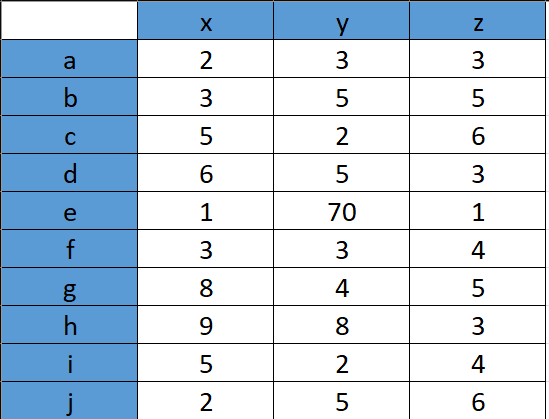Hitung LOF untuk setiap titik dan tunjukkan titik outlier teratas, dengan k = 3, dan gunakan Euclidean Distance (p=2).
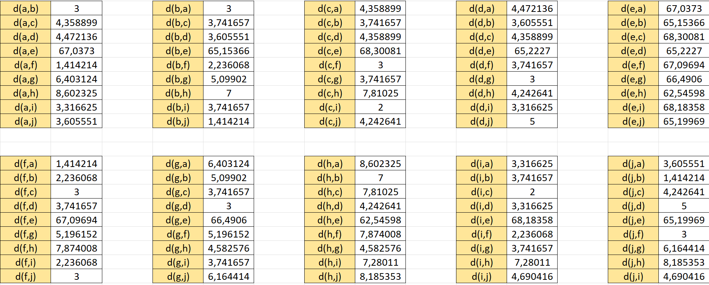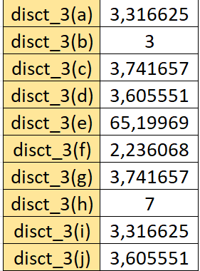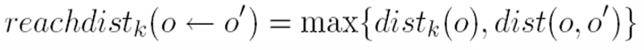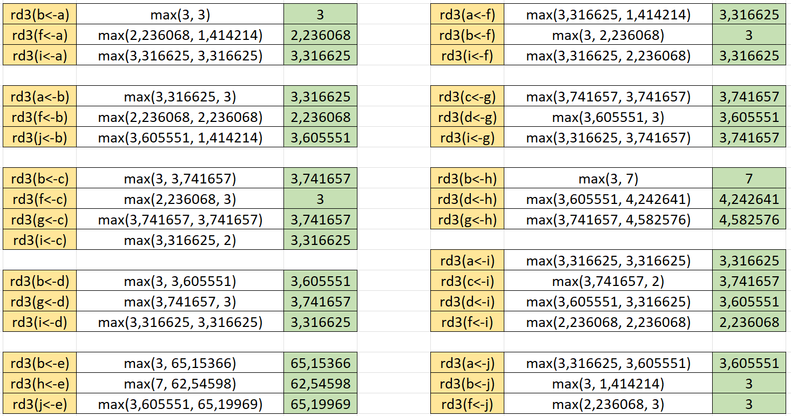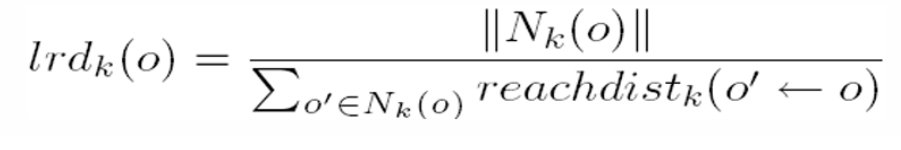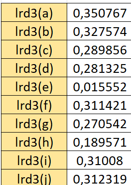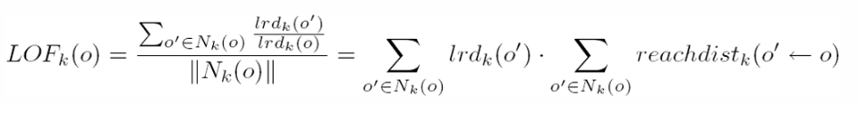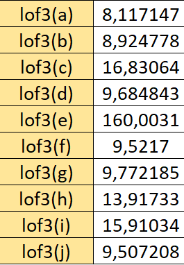Pada hasil perhitungan manual menunjukkan bahwa terdapat outlier pada indeks ke 4 (list indeks dimulai dari 0) yang LOF-nya bernilai 160,0031
Menghitung menggunakan python (Scikit learn)#
https://scikit-learn.org/stable/modules/generated/sklearn.neighbors.LocalOutlierFactor.html
from sklearn.neighbors import LocalOutlierFactor
import numpy as np
X = [
(2,3,3),
(3,5,5),
(5,2,6),
(6,5,3),
(1,70,1),
(3,3,4),
(8,4,5),
(9,8,3),
(5,2,4),
(2,5,6)
]
lof = LocalOutlierFactor(n_neighbors=3, contamination=0.1)
y_pred = lof.fit_predict(X)
print("Predicted table:", y_pred)
print("Negative LOF scores:", -lof.negative_outlier_factor_)
Predicted table: [ 1 1 1 1 -1 1 1 1 1 1]
Negative LOF scores: [ 0.91397101 0.99164196 1.07486362 1.09113776 17.7781172 1.07155684
1.1117982 1.54636994 0.99186184 1.05635644]
Pada hasil perhitungan menggunakan python bahwa terdapat outlier pada indeks ke-4 (list indeks dimulai dari 0) yang LOF-nya bernilai 17.7781172.
Implementasi Local Outlier Factor pada data iris#
Disini kita akan mendeteksi Local Outlier Factor pada dataset Iris, Berikut dataset iris yang akan digunakan untuk mendeteksi Local Outlier Factor
df_14 = _deepnote_execute_sql('SELECT * FROM iris3', 'SQL_0A99A490_95B5_4FD7_86DC_469537FD258A', audit_sql_comment='', sql_cache_mode='cache_disabled')
df_14
| id | SepalLengthCm | SepalWidthCm | PetalLengthCm | PetalWidthCm | Species | |
|---|---|---|---|---|---|---|
| 0 | 1 | 5.1 | 3.5 | 1.4 | 0.2 | Iris-setosa |
| 1 | 2 | 4.9 | 3.0 | 1.4 | 0.2 | Iris-setosa |
| 2 | 3 | 4.7 | 3.2 | 1.3 | 0.2 | Iris-setosa |
| 3 | 4 | 4.6 | 3.1 | 1.5 | 0.2 | Iris-setosa |
| 4 | 5 | 5.0 | 3.6 | 1.4 | 0.2 | Iris-setosa |
| ... | ... | ... | ... | ... | ... | ... |
| 145 | 146 | 6.7 | 3.0 | 5.2 | 2.3 | Iris-virginica |
| 146 | 147 | 6.3 | 2.5 | 5.0 | 1.9 | Iris-virginica |
| 147 | 148 | 6.5 | 3.0 | 5.2 | 2.0 | Iris-virginica |
| 148 | 149 | 6.2 | 3.4 | 5.4 | 2.3 | Iris-virginica |
| 149 | 150 | 5.9 | 3.0 | 5.1 | 1.8 | Iris-virginica |
150 rows × 6 columns
import mysql.connector
from sklearn.neighbors import LocalOutlierFactor
import matplotlib.pyplot as plt
# Informasi koneksi ke database MySQL
hostname = 'mysql-b1da7b1-surya22149.a.aivencloud.com'
port = 15391
username = 'avnadmin'
password = 'AVNS_zBTOptR3g0qGi1CjCvE'
database = 'dataset_iris'
conn = mysql.connector.connect(
host=hostname,
port=port,
user=username,
password=password,
database=database
)
# Membaca data dari database
query = "SELECT SepalLengthCm, SepalWidthCm FROM iris3"
cursor = conn.cursor()
cursor.execute(query)
rows = cursor.fetchall()
x = [[row[0], row[1]] for row in rows]
# Menutup koneksi ke database
conn.close()
# Membuat model LOF
lof = LocalOutlierFactor(n_neighbors=13, contamination=0.03)
# Melakukan prediksi outlier
y_pred = lof.fit_predict(x)
# Menampilkan data dengan outlier yang diidentifikasi
outlier_indices = [i for i, label in enumerate(y_pred) if label == -1]
outlier_values = [x[i] for i in outlier_indices]
plt.scatter([point[0] for point in x], [point[1] for point in x])
plt.scatter([point[0] for point in outlier_values], [point[1] for point in outlier_values], color='r')
plt.show()
{kind=link}
Outlier ditandai dengan titik merah
Data Modelling#
Mengitung Manual Naive Bayes#
Langkah-langkah dalam menghitung Gaussian Naive Bayes:
Bagi dataset Iris menjadi dua bagian: data pelatihan (train) sebesar 80% dan data uji (test) sebesar 20%.
Hitung probabilitas prior untuk setiap data train.
Hitung rata-rata (mean) dan standar deviasi dari setiap fitur untuk setiap kelas dalam data train.
Tetapkan nilai input untuk sepalLength, sepalWidth, petalLength, dan petalWidth.
Hitung distribusi Gaussian untuk setiap fitur dan setiap kelas dalam data train.
Hitung posterior dari setiap kelas menggunakan rumus Bayes.
Hitung probabilitas posterior untuk setiap data train.
Kelas dari data input baru ditentukan sebagai kelas yang memiliki probabilitas posterior tertinggi.
Pembagian Data#
Bagi iris dataset menjadi dua bagian, yaitu data train (80%) dan data test (20%).
Data train: 80% (40 Iris-setosa, 40 Iris-versicolor, 40 Iris-virginica).
Data test: 20% (10 Iris-setosa, 10 Iris-versicolor, 10 Iris-virginica).
from sklearn.model_selection import train_test_split
from sqlalchemy import create_engine
import pandas as pd
# Informasi koneksi ke database MySQL di cloud Aiven
hostname = 'mysql-b1da7b1-surya22149.a.aivencloud.com'
port = 15391
username = 'avnadmin'
password = 'AVNS_zBTOptR3g0qGi1CjCvE'
database = 'dataset_iris'
# Membuat string koneksi SQLAlchemy
connection_string = f'mysql+mysqlconnector://{username}:{password}@{hostname}:{port}/{database}'
# Membuat engine SQLAlchemy
engine = create_engine(connection_string)
# Membaca data dari database menggunakan Pandas
query = "SELECT * FROM `iris4`"
dataset = pd.read_sql(query, engine)
# Memisahkan fitur dan target
X = dataset.iloc[:,:5].values
y = dataset['Species'].values
# Memisahkan data menjadi data train dan data test
X_train, X_test, y_train, y_test = train_test_split(X, y, test_size=0.2)
# Menutup koneksi ke database
engine.dispose()
# Menampilkan data latih dalam bentuk DataFrame Pandas dengan nama kolom fitur yang baru
fitur_columns = ["id", "SepalLengthCm", "SepalWidthCm", "PetalLengthCm", "PetalWidthCm"]
df_train = pd.DataFrame(data=X_train, columns=fitur_columns)
df_train["Species"] = y_train
# Urutkan data latih berdasarkan 'class' dan 'id'
df_train_sorted = df_train.sort_values(by=['Species', 'id'])
# Bulatkan nilai ID
df_train_sorted['id'] = df_train_sorted['id'].astype(int)
print("Data training :")
print(df_train_sorted.head(1000))
# Menampilkan data uji dalam bentuk DataFrame Pandas dengan nama kolom fitur yang baru
df_test = pd.DataFrame(data=X_test, columns=fitur_columns)
df_test["Species"] = y_test
# Urutkan data uji berdasarkan 'class' dan 'id'
df_test_sorted = df_test.sort_values(by=['Species', 'id'])
# Bulatkan nilai ID
df_test_sorted['id'] = df_test_sorted['id'].astype(int)
print("\nData test :")
print(df_test_sorted.head(1000))
Data training :
id SepalLengthCm SepalWidthCm PetalLengthCm PetalWidthCm \
105 1 5.1 3.5 1.4 0.2
73 2 4.9 3.0 1.4 0.2
78 3 4.7 3.2 1.3 0.2
48 4 4.6 3.1 1.5 0.2
7 6 5.4 3.9 1.7 0.4
.. ... ... ... ... ...
31 144 6.8 3.2 5.9 2.3
2 145 6.7 3.3 5.7 2.5
3 146 6.7 3.0 5.2 2.3
34 148 6.5 3.0 5.2 2.0
76 149 6.2 3.4 5.4 2.3
Species
105 Iris-setosa
73 Iris-setosa
78 Iris-setosa
48 Iris-setosa
7 Iris-setosa
.. ...
31 Iris-virginica
2 Iris-virginica
3 Iris-virginica
34 Iris-virginica
76 Iris-virginica
[120 rows x 6 columns]
Data test :
id SepalLengthCm SepalWidthCm PetalLengthCm PetalWidthCm \
12 5 5.0 3.6 1.4 0.2
7 8 5.0 3.4 1.5 0.2
0 11 5.4 3.7 1.5 0.2
2 14 4.3 3.0 1.1 0.1
24 16 5.7 4.4 1.5 0.4
6 28 5.2 3.5 1.5 0.2
29 35 4.9 3.1 1.5 0.1
27 36 5.0 3.2 1.2 0.2
28 37 5.5 3.5 1.3 0.2
1 48 4.6 3.2 1.4 0.2
11 54 5.5 2.3 4.0 1.3
23 60 5.2 2.7 3.9 1.4
10 61 5.0 2.0 3.5 1.0
5 68 5.8 2.7 4.1 1.0
21 73 6.3 2.5 4.9 1.5
15 78 6.7 3.0 5.0 1.7
9 79 6.0 2.9 4.5 1.5
4 87 6.7 3.1 4.7 1.5
17 88 6.3 2.3 4.4 1.3
20 95 5.6 2.7 4.2 1.3
22 106 7.6 3.0 6.6 2.1
13 108 7.3 2.9 6.3 1.8
3 119 7.7 2.6 6.9 2.3
16 125 6.7 3.3 5.7 2.1
8 127 6.2 2.8 4.8 1.8
14 131 7.4 2.8 6.1 1.9
19 134 6.3 2.8 5.1 1.5
26 137 6.3 3.4 5.6 2.4
25 147 6.3 2.5 5.0 1.9
18 150 5.9 3.0 5.1 1.8
Species
12 Iris-setosa
7 Iris-setosa
0 Iris-setosa
2 Iris-setosa
24 Iris-setosa
6 Iris-setosa
29 Iris-setosa
27 Iris-setosa
28 Iris-setosa
1 Iris-setosa
11 Iris-versicolor
23 Iris-versicolor
10 Iris-versicolor
5 Iris-versicolor
21 Iris-versicolor
15 Iris-versicolor
9 Iris-versicolor
4 Iris-versicolor
17 Iris-versicolor
20 Iris-versicolor
22 Iris-virginica
13 Iris-virginica
3 Iris-virginica
16 Iris-virginica
8 Iris-virginica
14 Iris-virginica
19 Iris-virginica
26 Iris-virginica
25 Iris-virginica
18 Iris-virginica
pip install openpyxl
Menyimpan data train dan data test ke dalam bentuk csv dan xlsx
# Menyimpan data train yang diurutkan ke file CSV
df_train_sorted.to_csv("datrain.csv", index=False)
# Menyimpan data test yang diurutkan ke file CSV
df_test_sorted.to_csv("datest.csv", index=False)
Pembagain data test dan data train sebesar :
<> Data train : 80% = 43 setosa, 36 versicolor, 41 virginica
<> Data test : 20 % = 7 setosa, 14 versicolor, 9 virginica
Menghitung Probabilitas Setiap Data Train#
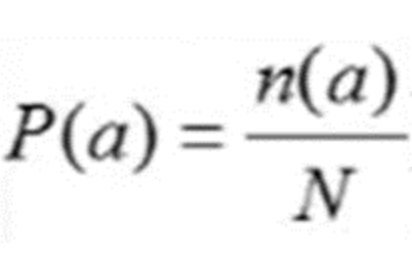<> P(a) : probabilitas
<> n(a) : banyaknya data train pada suatu kelas (43,36,41)
<> N : total banyaknya data train (43+36+41=120)
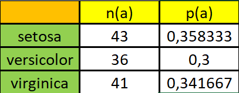Menghitung Mean Dan Standart Devisiasi#
Hitung mean dan standar deviasi dari setiap fitur untuk setiap kelas pada data train.
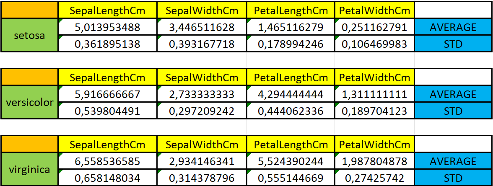Penentuan Data Input#
Tentukan data input yang ingin diprediksi kelasnya, misalnya sepalLength, sepalWidth, petalLength, dan petalWidth.
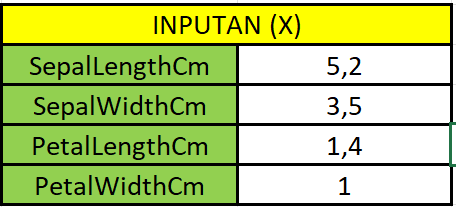Perhitungan Distribusi Gaussian#
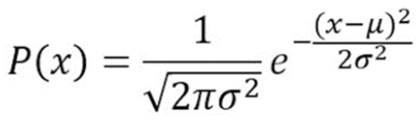Berdasarkan rumus di atas, maka diperoleh:
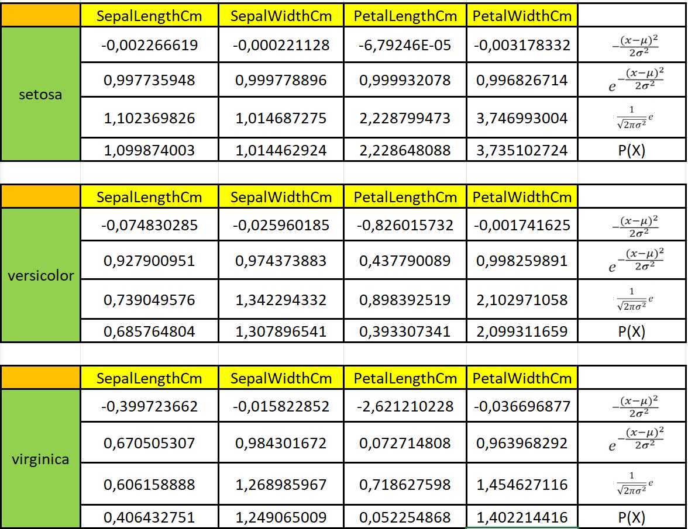Perhitungan Probabilitas Posteriori#
Karena P(X) adalah konstan untuk semua kelas, maka posterior dapat dihitung menggunakan rumus teorema Bayes, yaitu
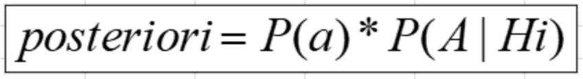Setelah menghitung probabilitas posteriorinya dengan mengkalikan likelihood dengan prior, akan menghasilkan :
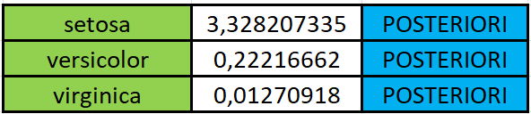Penentuan Probabilitas Posteriori Tertinggi#
Dari hasil perhitungan di atas, terlihat bahwa kelas Iris-setosa memiliki nilai posterior tertinggi, yaitu 3,328207335. Dengan demikian, dapat disimpulkan bahwa data dengan inputan SepalLengthCm: 5,2, SepalWidthCm: 3,5, PetalLengthCm: 1,4, PetalWidthCm: 1 diklasifikasikan sebagai kelas Iris-setosa, karena mendapat nilai posteriori tertinggi.
Menghitung Naive Bayes menggunakan Python (Scikit Learn)#
Proses pengambilan data train iris untuk disimpan sebagai DataFrame.
df_15 = _deepnote_execute_sql('SELECT * FROM iris5', 'SQL_0A99A490_95B5_4FD7_86DC_469537FD258A', audit_sql_comment='', sql_cache_mode='cache_disabled')
df_15
| id | SepalLengthCm | SepalWidthCm | PetalLengthCm | PetalWidthCm | Species | |
|---|---|---|---|---|---|---|
| 0 | 1 | 5.1 | 3.5 | 1.4 | 0.2 | Iris-setosa |
| 1 | 2 | 4.9 | 3.0 | 1.4 | 0.2 | Iris-setosa |
| 2 | 3 | 4.7 | 3.2 | 1.3 | 0.2 | Iris-setosa |
| 3 | 4 | 4.6 | 3.1 | 1.5 | 0.2 | Iris-setosa |
| 4 | 5 | 5.0 | 3.6 | 1.4 | 0.2 | Iris-setosa |
| ... | ... | ... | ... | ... | ... | ... |
| 145 | 146 | 6.7 | 3.0 | 5.2 | 2.3 | Iris-virginica |
| 146 | 147 | 6.3 | 2.5 | 5.0 | 1.9 | Iris-virginica |
| 147 | 148 | 6.5 | 3.0 | 5.2 | 2.0 | Iris-virginica |
| 148 | 149 | 6.2 | 3.4 | 5.4 | 2.3 | Iris-virginica |
| 149 | 150 | 5.9 | 3.0 | 5.1 | 1.8 | Iris-virginica |
150 rows × 6 columns
import pandas as pd
from sklearn.naive_bayes import GaussianNB
from sklearn.model_selection import train_test_split
from sklearn.metrics import accuracy_score
from sklearn.metrics import confusion_matrix
df_bayes = pd.DataFrame(df_15)
df_bayes.head(150)
| id | SepalLengthCm | SepalWidthCm | PetalLengthCm | PetalWidthCm | Species | |
|---|---|---|---|---|---|---|
| 0 | 1 | 5.1 | 3.5 | 1.4 | 0.2 | Iris-setosa |
| 1 | 2 | 4.9 | 3.0 | 1.4 | 0.2 | Iris-setosa |
| 2 | 3 | 4.7 | 3.2 | 1.3 | 0.2 | Iris-setosa |
| 3 | 4 | 4.6 | 3.1 | 1.5 | 0.2 | Iris-setosa |
| 4 | 5 | 5.0 | 3.6 | 1.4 | 0.2 | Iris-setosa |
| ... | ... | ... | ... | ... | ... | ... |
| 145 | 146 | 6.7 | 3.0 | 5.2 | 2.3 | Iris-virginica |
| 146 | 147 | 6.3 | 2.5 | 5.0 | 1.9 | Iris-virginica |
| 147 | 148 | 6.5 | 3.0 | 5.2 | 2.0 | Iris-virginica |
| 148 | 149 | 6.2 | 3.4 | 5.4 | 2.3 | Iris-virginica |
| 149 | 150 | 5.9 | 3.0 | 5.1 | 1.8 | Iris-virginica |
150 rows × 6 columns
Fitur-fitur yang terdiri dari “SepalLengthCm”, “SepalWidthCm”, “PetalLengthCm”, dan “PetalWidthCm” dipisahkan dari DataFrame df_bayes dan dimasukkan ke dalam variabel X. Variabel target atau kelas, yaitu “Species”, dimasukkan ke dalam variabel y. Setelahnya, data dibagi menjadi dua set: data train (X_train, y_train) dan data test (X_test, y_test) dengan menggunakan fungsi train_test_split, di mana proporsi data pengujian adalah 20% dari keseluruhan data.
X = df_bayes[['SepalLengthCm', 'SepalWidthCm', 'PetalLengthCm', 'PetalWidthCm' ]]
y = df_bayes['Species']
X_train, X_test, y_train, y_test = train_test_split(X, y, test_size=0.2)
Model Gaussian Naive Bayes dimulai dengan inisialisasi menggunakan data train. Setelah pelatihan, model digunakan untuk membuat prediksi pada data test, dan akurasi prediksi diukur menggunakan metrik akurasi.
gnb = GaussianNB()
gnb = gnb.fit(X_train, y_train)
y_pred = gnb.predict(X_test)
cm = confusion_matrix(y_test, y_pred)
acc_secore = round(accuracy_score(y_pred, y_test), 3)
print('Accuracy: ', acc_secore)
cm
Accuracy: 0.967
array([[13, 0, 0],
[ 0, 6, 1],
[ 0, 0, 10]])
Selanjutnya adalah menggunakan model tersebut untuk memprediksi spesies dari data masukan yang diberikan. Untuk pengujian, kita akan menggunakan data iris dengan karakteristik SepalLengthCm: 5,2, SepalWidthCm: 3,5, PetalLengthCm: 1,4, PetalWidthCm: 1
print(gnb.predict([[5.2, 3.5, 1.4, 1]]))
['Iris-setosa']
/shared-libs/python3.9/py/lib/python3.9/site-packages/sklearn/base.py:450: UserWarning: X does not have valid feature names, but GaussianNB was fitted with feature names
warnings.warn(
Hasil prediksi menunjukkan bahwa data inputan tersebut diklasifikasikan sebagai spesies Iris-setosa, sesuai dengan hasil perhitungan manual.
![Created in deepnote.com]() Created in Deepnote
Created in Deepnote